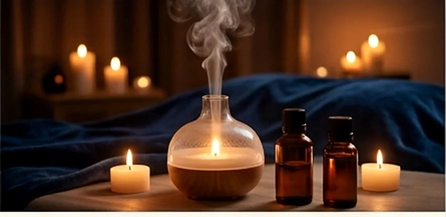

Chiromasaż relaksujący
Delikatne ruchy, spokojne tempo i kojąca atmosfera nad morzem. Chiromasaż relaksujący, o który prosi Twój umysł i ciało.
60 min · od 65 € z pakietem
Zarezerwuj teraz przez WhatsApp Sprawdź najbliższy wolny termin
Cel jest ten sam – uspokoić się i odciąć od wszystkiego – ale chiromasaż ma pełniejszą podstawę techniczną: oprócz relaksu rozluźnia kark, ramiona i plecy bez mocnego nacisku. To najlepszy wybór, jeśli przychodzisz zestresowany i z lekkim napięciem mięśni.
Bo nie trzeba mieć dolegliwości, żeby go potrzebować. Chiromasaż relaksujący opiera się na delikatnych, ciągłych ruchach, które jednocześnie zwalniają tempo ciała i umysłu — czegoś, czego prawie nikt nie osiąga, po prostu odpoczywając w domu. To idealny start, jeśli nigdy nie miałeś chiromasażu, i ulubiony wybór tych, którzy już go poznali i wracają co tydzień.
Każdej sesji towarzyszy kojąca muzyka w tle, w spokojnej przestrzeni blisko morza. 60 minut, które czuć długo po zejściu z leżanki: jasny umysł i lekkie ciało.
60 min · od 65 € z pakietem
Odpowiadamy od razu na WhatsApp. Wybierz dzień i godzinę, bez zobowiązań.
Napisz przez WhatsAppNie musisz niczego przynosić. Zapewniamy wszystkie niezbędne materiały, aby Twoje doświadczenie było w pełni komfortowe i relaksujące.
Wszystkie nasze sesje trwają 60 minut. Chiromasaż kosztuje 90 € (od 65 € z pakietem) w naszym centrum augusto w centrum Malagi lub od 120 € z dojazdem do domu.
Cel jest podobny (uspokojenie i odprężenie), ale chiromasaż klasyczny dodatkowo wnosi bardziej kompletną manualną bazę naturalną.
Tak, jako delikatna technika może pomóc uwolnić napięcie w plecach, nie będąc przy tym agresywnym.
Tak, wielu klientów włącza go jako stałą wizytę co miesiąc lub co dwa tygodnie, by utrzymać ciało w odprężeniu.
Zalecamy wcześniejszą rezerwację, aby zagwarantować dostępność w dogodnym dla Ciebie terminie, choć zawsze staramy się pomóc również klientom zgłaszającym się w ostatniej chwili, jeśli to możliwe.
Pracuje się z delikatnym naciskiem i powolnymi ruchami, zawsze stawiając komfort ponad intensywność.
Ponieważ łączy delikatność chiromasażu relaksacyjnego z techniczną bazą chiromasażu klasycznego, idealny dla kogoś, kto szuka spokoju bez rezygnacji z dobrze wykonanej pracy.